Lateral and Forward Movement¶
Pat Doughert¶
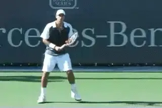
Most movement in tennis is lateral or side to side.
As we saw in Part 2, establishing upper body momentum in the direction of movement is an essential part of an explosive first step reaction. When your center of gravity is low it is much more natural to establish upper body momentum in your reaction and movement technique. (link.)
Lateral Movement
Though tennis calls for quickness in every direction, the majority of movement required is lateral movement. While it may be quicker just to turn sideways and sprint when running down a wide forehand, tennis players not only need to get to the ball in time but need to be in optimal position to execute the stroke. Lateral movement techniques enable you to flow more smoothly into the optimal hitting stance and execute. Let's look at the lateral movement footwork out to the ball and then the recovery patterns back toward the middle.
Crossover
Crossover footwork is the quickest, most commonly used lateral footwork pattern in moving to the ball in pro tennis. You will sometimes see players use shuffle footwork when they are only a step or two from the ball. But the crossover pattern is effective for covering greater distances laterally whether moving to the ball or moving back on recovery.
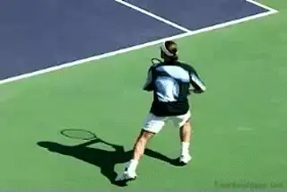
Players shuffle step on close balls, but the primary footwork pattern is the crossover.
This technique involves the opposite foot crossing over in front of the foot nearest to the direction of movement. Think of it as sprinting footwork except the core body remains more aligned towards the direction of the net, rather than totally facing the direction you are running as you would in a pure sprint. Though your shoulders are not completely turned in the direction you are running, you still want the shoulders leading the way to provide upper body momentum as you crossover.
Adjustment Steps
No matter what direction you are moving you want your upper body leading the way and maintaining momentum until you begin to adjust your feet for the stroke. Then as you begin your adjustment steps, your upper body momentum should become more neutral, centering your balance on the balls of the feet.
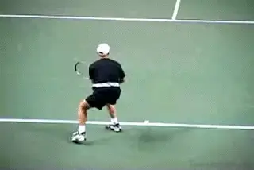
Slow motion shows you the adjusting steps you can often only hear.
When watching the top players in real time, the adjustment steps happen so quickly you may not always see them, but on the hard courts you can definitely hear them. The adjustment steps make those chirping squeak noises just prior to setting up the stance to strike the ball. But in the TPA slow motion video, it is possible to see them clearly.
The adjustment steps are breaking steps. They slow down the body's directional momentum. They are also positioning steps, allowing the player's feet to set up in an optimal hitting stance. Typically, players take one or two adjustment steps to control their momentum. Usually, they then take one somewhat larger additional step to position the outside foot and establish their hitting stance.
Hands and Feet
The adjustment steps with the feet are critical to the set up, but what is less widely understood is the critical role of the hands. They are equally important. The hands actually trigger the type of stance the player will use. The feet will set up automatically based on the position of the hands in the racket preparation in the critical moments before the set up.
On the forehand, if the racket hand reaches out to the player's side, the foot will set up beneath it, triggering an open stance. But if the right hand goes back behind the body into a deep backswing, the right foot will stay back with the right hand. This will cause the left foot to set up in a closed stance.
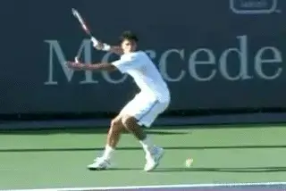
Differences in the position of the hand in the backswing trigger different stances.
When the backswing is too large and gets behind your back, the butt of the racket points towards the side fence, sending the wrong message down to the feet. This will trigger the feet to set up in a less preferable closed stance. When your racket preparation positions the racket in front of your body, the butt of the racket will point in the direction of the net, which sends the correct message to the feet. This will allow you to set up in either an open or a neutral stance, and allow you to create power.
So to set up in the optimal stance for every situation your racket should be somewhat to the side of your body as you close into position. This position should be established before you begin your adjustment steps, to allow yourself enough time to set your feet for the shot.
Swing Alignment to the Ball
One of the best drills to teach players how to properly set up and position to strike the ball is called the baseball glove drill. The player wears a baseball glove on their dominant hand and practices moving to the ball and catching it. You can actually do it without the glove as well. As you feed wide balls to the forehand the player should move out to catch the ball with the glove, then recover after each ball. You want to encourage the player to extend their arm and glove out as they reach to catch the ball. What you'll immediately notice is how well the player seems to establish the right distance from the ball.
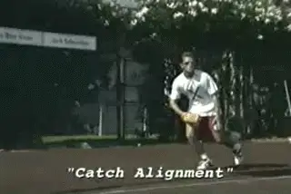
The baseball glove drill teaches alignment with the outside foot.
With this drill the outside foot naturally sets up in an open stance. This gives the player the option of hitting open or driving forward into a neutral stance. Once the player has completed about 20 reps of the exercise have them remove the glove and repeat the drill with their racket in hand.
The challenge is to extend the arm and position so the ball bounces over the butt end of the racket. This teaches the optimal alignment for producing maximum leverage in the stroke by setting up on the outside foot and positioning the butt end of the racket behind the incoming ball. After several reps of this variation, finish the exercise by allowing the player to experience the feel of striking the ball from this alignment. For many players who have the habit of setting up too far away from the ball, it may take some time for them to adjust their swing to the optimal position and alignment. In time, they will see an improvement in power and control as a result of better leverage.
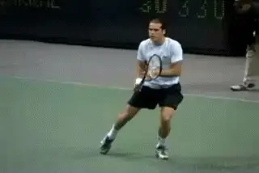
With less torso rotation, players frequently hit the one-hander closed.
Over-Striding
When your center of gravity is high, it is more likely you'll over-stride in your first step and be much slower. An over-stride occurs when the stride length becomes too extended. This is when the leading foot extends beyond the knee and the heel of the foot impacts the ground first. Over-striding tends to neutralize upper body momentum and slow you down. Players tend to over stride most often when they feel forced to cover too much ground in too little time. Many players, especially taller players, regularly over-stride on purpose, thinking by covering more ground with each step they are taking better advantage of their height over smaller players.
The problem is that they are very slow and sluggish at getting up to speed. The end result is similar to starting a bike race in tenth gear rather than first, what I refer to as "10th gear" footwork. This is another benefit of training with the A.P. Belt. It effectively corrects the over-striding habit through resistance feedback. (link).
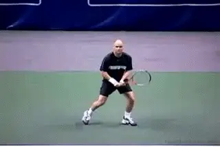
Unlike the forehand, advanced players regularly hit the two-hander from a closed stance.
Closed Stance
When the front foot steps across and points in the direction of the side fence with the feet spread apart parallel to the baseline, this is a closed stance. One-handed backhands can be executed effectively from the closed stance because relatively little core rotation is required to power the stroke. However, there are many problems associated with the closed stance as it relates to the forehand. This is because it makes it much more difficult to rotate and power the stroke. This is especially true with the more under the handle grips which tend to have the most torso rotation.
The closed stance is also common at the level pro on two-handed backhands. This is probably due to the fact that the front arm plays an important role in the forward swing. This means there is slightly less hip rotation compared to the forehand. Because of this the stance doesn't block the natural rotation pattern as much.
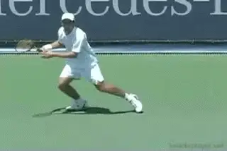
The neutral stance is ideal when you can step forward to hit.
However, the closed stance on the two-hander is a more advanced variation. For players learning to hit the two-hander, a fully closed stance can limit a player's shot options making it more difficult to go crosscourt, especially under pressure. Because of the higher degree of torque and twisting of the body must endure, the extreme closed stance may also increase the potential for repetitive injury in the lower body. The basic principles of alignment should be mastered first using the neutral and open stances.
Neutral Stance
When the stance is perpendicular to the baseline and the front foot steps towards the net, this is a neutral stance. When you have time to set up, the optimal choice is to set up the back foot then drive forward into a neutral stance. It is considered the ideal hitting stance for situations when you have the opportunity to step forward to hit and time permits. This is true on the forehand, and both the one-handed and two-handed backhands. It is true that it is often necessary to hit on the rise in the pro game with the neutral stance, but this is much less true at lower levels of play.
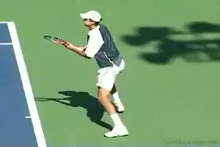
The pace of the modern game requires pro players to hit open stance.
The weight transfer in a neutral stance starts on the back foot and as the swing starts forward the weight drives to the front foot before contact. When performed optimally, the weight transfer generates a pivoting turn of the core body to help power the stroke. This comes more from this pivoting action than from the linear stepping movement. It is very important to maintain your athletic foundation to manage the weight transfer.
Open Stance
When the front foot is off set to the opposite side of the body from the hit, it is called the open stance. The stance can be either fully or partially open depending on the exact position of the foot. Being able to effectively execute from the open stance is a required element in today's fast paced game on both the forehand and backhand sides.
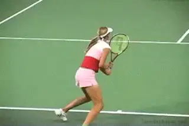
\ Loading in the open and closed stances.On the forehand, for many if not most pro players, the open stance is the preferred stance, even when there might be time to step forward into the neutral. This has to do with the amount of body rotation players use with the more under the handle semi-western grips. [It also has to do with the contact heights in the pro game which can reach shoulder level or even higher.] [It also has to do with time]. In situations where you are under pressure with very little time to set up, the open stance is your best option. The open stance also facilitates a quicker recovery after the hit. To hit the open stance effectively, you have to load the body weight on the foot closest to the ball and avoid transferring your body weight towards the other foot too soon.
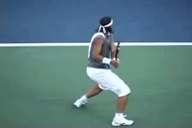
The shuffle recovery step is good for covering shorter distances.
Loading Up
The concept of loading up refers to creating the right stance for a particular ball, but also to the position of the core body weight down in the stance. For an open stance, you want to be low in your athletic foundation and load the body weight over the foot nearest to the ball so that the heel of that foot naturally elevates slightly off the ground. [In a neutral stance, your want your athletic foundation and body weight loaded into the back foot and prepared to transfer forward into the stroke with the step into the shot.] [This happens as well in the closed stance though possibly for a briefer period before the cross step.]
Recovery
Shuffle footwork may not be used as much in moving to the ball, but shuffle footwork is a component on almost every recovery. It is common with pro players when they have only one step to recover before the next split step. But when they have a longer distance, they use the crossover pattern for the first one to two steps. They then make the transition to the shuffle steps as they you get closer to recovery position.
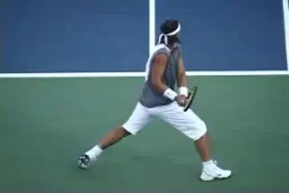
\ The combination recovery pattern, the crossover step, followed the shuffle step.[This combination of crossover and shuffle footwork patterns enables you to cover ground better.] [The initial cross step brings you back toward the middle quicker, and shuffling allows you to neutralize your body momentum and flow seamlessly into the split step footwork base.] Too many players use shuffle footwork in situations where they should also be incorporating crossover footwork. For instance, from a wide position in the court, they try to shuffle the whole way back on recovery, which is too slow to be effective.
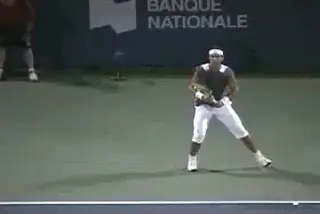
Another pro pattern, the cross behind step in the run around forehand.
Cross-Behind
The cross-behind pattern involves the opposite foot crossing behind the foot nearest to the direction of movement. This pattern is not used as commonly as the crossover. But the cross-behind step is a very versatile technique used in more situations than you might think. [You'll see the cross-behind step used to move laterally in the runaround forehand.] [This technique is also commonly used for the purpose of maintaining sideways alignment to the net when moving back to cover deep balls and on the follow-through when moving forward through slice approach shots.]
Forward Sprint Footwork
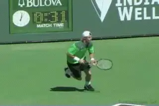
On sprints forward in the court, players stay low and limit stride length.
To become quicker in your forward movement, you want to maintain a low center of gravity with your upper body momentum leading the way and limit the length of you strides. Players who are very quick use what I refer to as "first gear" footwork. That means they run primarily on the balls of the feet using short, choppy strides where the feet remain spread out approximately shoulder width apart. The concept is to take shorter steps but more of them and pump the legs very rapidly to drive your body weight forward. It is quite similar to the experience of racing off the start in 1st gear on a ten-speed bike which pumps the legs quickly. Traveling the same distance, a quicker player may take 15 push off driving steps where a slower player might only take 10 longer strides. The difference is the RPMs or how quickly you can pump the legs.
Kick Step
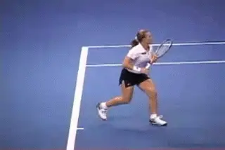
In the kick step, the back foot can appear to actually kick the front foot forward.
A variation of the cross-behind step in sometimes also used in forward movement. This is referred to as the kick step. It is called a kick step because the rear leg often appears to collide with the front leg, almost kicking the front leg forward. The kick step is an effective maneuver on both the forehand and backhand side, to move in a neutral hitting stance one stride forward to hit a shorter ball.
Stay tuned for Part 4 where you'll learn about hitting on the move, the running open stance, the reverse neutral stance, braking techniques and other critical information you need to know for quicker recovery.